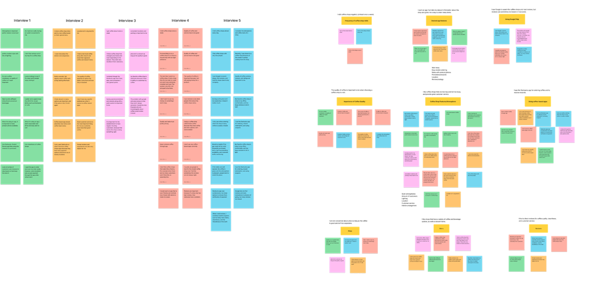
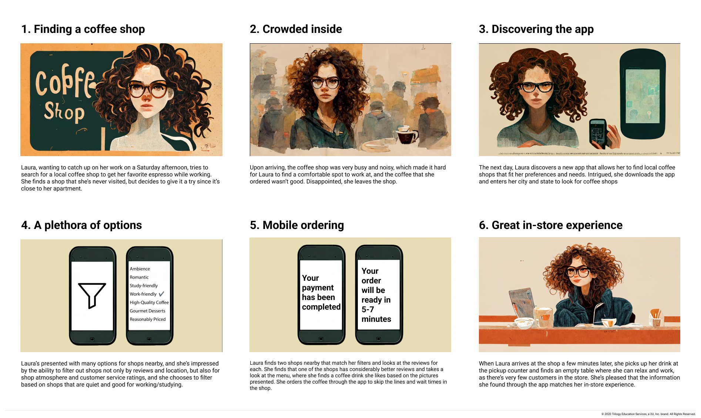
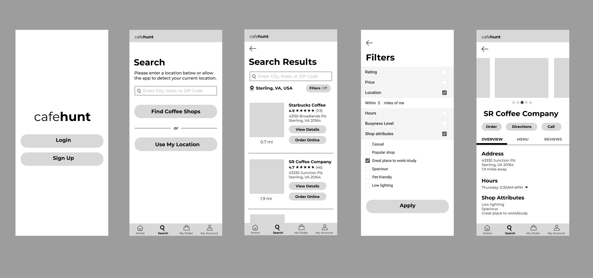
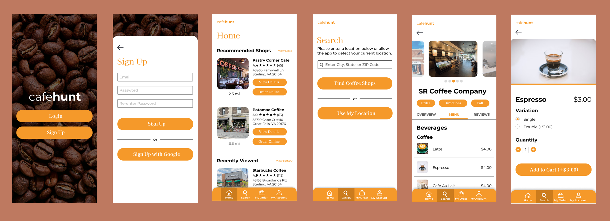

Cafehunt Mobile App Prototype
An app to help coffee lovers discover cafes and coffee shops that best fit their preferences and place orders for menu items.
Team Size
2
Roles
User Researcher, Interaction Designer, Presenter
Deliverables
High-fidelity Mobile Prototype
Tools
Figma, FigJam, Excel, Word, Powerpoint, Trello
01. Research
My team's research began with one question:
What is the process coffee drinkers go through to find coffee shops in their area?
More specifically, we wanted to:
- Figure out what makes a person want to try a new coffee shop
- Understand the buying decisions and habits of frequent coffee shop customers
- Identify additional features a coffee lover might want out of a coffee-based app
With these objectives in mind, my partner and I compiled a list of 15 interview questions and 13 survey questions.
Interviewees
5 coffee drinkers ages 20-40 that visit coffee shops
Survey Responses
64 online responses
Sample question from our survey.
02. Definition
After gathering our research, we began creating an affinity diagram as a team. At first, our app was only going to focus on finding coffee shops, but we found that potential users would want a way to order menu items through the app as well to reduce wait times in-store. They like to check reviews beforehand for coffee quality, cleanliness of the shop, and customer service quality through Google, but were frustrated that many reviews could be biased or inaccurate.
Screenshot of the affinity diagram we created to synthesize our research.
We then created a user persona that could accurately reflect the viewpoint of a typical user according to these findings.
Persona profile for Laura Gallagher, a marketing manager in NYC. She wants to find local coffee shops that are suitable for working and prefers in-app ordering to reduce wait times in-store.
Storyboard detailing the experience a user may go through that leads them to try Cafehunt using Laura from above as the main character. After an unpleasant experience trying a new cafe, Laura downloads Cafehunt and is able to find a coffee shop with a quieter environment perfect for her to focus on work. Cafehunt's ordering system allows her to pick up when she arrives to skip the line.
The Problem
Young coffee drinkers struggle to find coffee shops that match their personal preferences in terms of style and menu items.
The Solution
We will create a simple and easy-to-use coffee shop finder app that considers important factors like preferred coffee shop style, menu options, location, and ambience to help young coffee drinkers quickly locate and enjoy a coffee shop that perfectly fits their tastes and preferences.
03. Ideation
To ideate potential features for CafeHunt, we decided to go through the “I Like, I Wish, What If?” brainstorming process. After this, we determined the importance and feasibility of these possibilities to narrow our scope. In the interest of time (this project had a 2-week deadline), we decided to implement three key features in our prototype:
- Search/filter system for finding coffee shops based on user preferences
- Display information about shops, including location, reviews, and menu
- Simple online ordering system
Feature prioritization matrix created from our brainstorming session; we decided to prioritize the most important and most feasible features, such as the search/filter engine and online ordering system.
We created a user flow of the app that details the onboarding process, searching for coffee shops, and placing an order for pickup at a selected shop. Using this as our guide, we began work on our initial paper prototypes.
04. Iteration
User Testing
We tested each of our paper prototypes with 3 people each. After figuring out that the Prototype #1 covered the issues found in the Prototype #2, we decided to go with #1 and solve the issues found in this. From the feedback given by our user testers, we decided to make the following changes going into the low-fidelity prototype:
- Make buttons/navigation elements more visible using size, color, etc.
- Animated transitions between screens can be less jarring (i.e. slower) in some parts to give users time to read and process screens
05. Low-Fidelity Prototype

06. High-Fidelity Prototype
